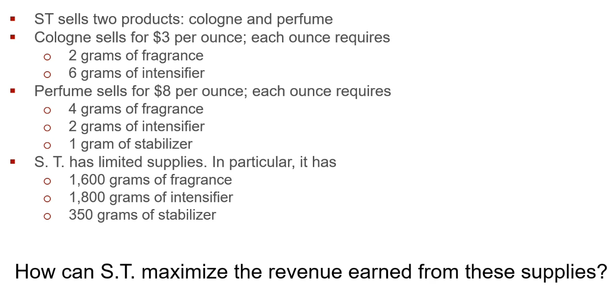
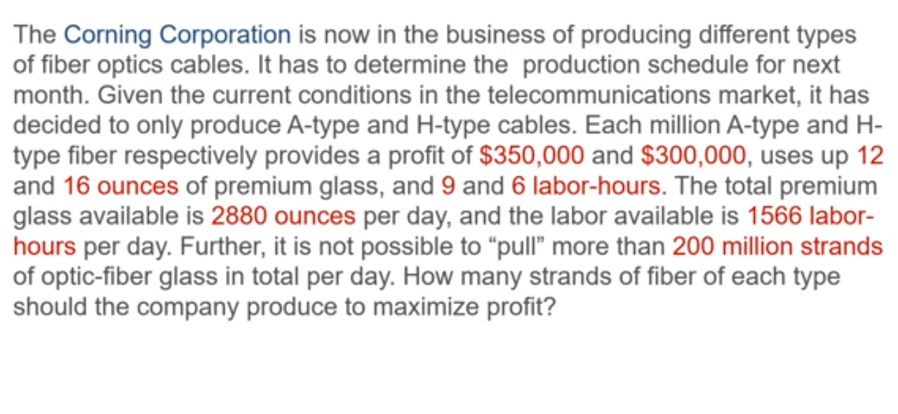

# install.packages('lpSolve')
# install.packages('lpSolveAPI')
library('lpSolve')
library('lpSolveAPI')Linear Programming | Practice Problems
Intro
These are practice problems for linear programming in R.
Packages
Helpers
A helper function for displaying a constraint sensitivity table:
fmt_rhs_sensitivity <- function(obj, names) {
obj$names = names
tabl <- as.data.frame(obj)[,c(4,1,2,3)]
colnames(tabl) <- c('Constraint', 'Shadow.Price', 'RangeMin', 'RangeMax')
print(tabl)
}fmt_obj_sensitivity <- function(obj, names) {
obj$names = names
tabl <- as.data.frame(obj)[,c(3,1,2)]
colnames(tabl) <- c('Coefficient', 'RangeMin', 'RangeMax')
print(tabl)
}Problem 1

Formulation
Decision Variables
\[ \begin{align} C = \text{Cologne} \\ P = \text{Perfume} \end{align} \]
Objective Function
\[ \begin{align} 3C + 8P = \text{Dollars of Reveune | To maximize} \end{align} \]
Constraints
\[ \begin{align} 2C + 4P <= 1600 \text{ | fragrance} \\ 6C + 2P <= 1800 \text{ | intensifier} \\ 0C + 1P <= 350 \text{ | stabilizer} \\ C >= 0 \\ P >= 0 \end{align} \]
Solution
LP.1 <- make.lp(
0 # Number of constraints
,2 # Number of decision variables
)Add constraints
add.constraint(
LP.1 # The linear programming object
,c(2,4) # The coefficients for decision variables above
,"<=" # The type of operator for the constraint
,1600 # The constant on the right side of the constraint
)
add.constraint(LP.1, c(6,2), "<=", 1800)
add.constraint(LP.1, c(0,1), "<=", 350)Define objective function
set.objfn(
LP.1 # Our LP object
,c(3,8) # The objectie function coefficients
)
lp.control(
LP.1 # Our LP object
,sense = "max" # The goal is to "maximize"
)Set names for interpretability
cnames <- c("Cologne", "Perfume")
rnames <- c("Fragrance", "Intensifier", "Stabilizer", cnames)Describe the setup
print(LP.1)Model name:
C1 C2
Maximize 3 8
R1 2 4 <= 1600
R2 6 2 <= 1800
R3 0 1 <= 350
Kind Std Std
Type Real Real
Upper Inf Inf
Lower 0 0 This all looks correct.
Solve the problem
solve(LP.1)[1] 0We get a 0 which indicates an optimal solution was found.
Let’s now see the solution
get.objective(LP.1)[1] 31003100 is the revenue maximized from the objective function.
get.variables(LP.1)[1] 100 350The optimal solution is to produce 100 units of cologne and 350 units of perfume.
We can now do the sensitivity analysis!
We can interpret the sensitivity for constraints:
cs.1 <- get.sensitivity.rhs(LP.1)
fmt_rhs_sensitivity(cs.1, rnames) Constraint Shadow.Price RangeMin RangeMax
1 Fragrance 1.5 1.4e+03 1.766667e+03
2 Intensifier 0.0 -1.0e+30 1.000000e+30
3 Stabilizer 2.0 3.0e+02 4.000000e+02
4 Cologne 0.0 -1.0e+30 1.000000e+30
5 Perfume 0.0 -1.0e+30 1.000000e+30So long as a change in each of the constraints stays within the bounds, each unit change has a $X increase on the optimal solution.
We can interpret the sensitivity for the objective function constraints:
objs.1 <- get.sensitivity.obj(LP.1)
fmt_obj_sensitivity(objs.1, cnames) Coefficient RangeMin RangeMax
1 Cologne 0 4e+00
2 Perfume 6 1e+30The optimal solution will remain the same so long as the Cologne coefficient is between 0 or 4, or the Perfume coefficient is between 6 and Inf.
HOWEVER, any change in these coefficients will change the optimal solution value, even if the inputs were the same.
Problem 2

Formulation
Decision Variables
\[ \begin{align} A = \text{Type A} \\ H = \text{Type H} \end{align} \]
Objective Function
\[ \begin{align} 350000A + 300000H = \text{Dollars of Profit | To maximize} \end{align} \]
Constraints
\[ \begin{align} 12A + 16H <= 2880 \text{ | Premium glass per day} \\ 9A + 6H <= 1566 \text{ | Available labor per day} \\ A + H <= 200 \text{million | Max fiber-optic glass per day} \\ A >= 0 \\ H >= 0 \end{align} \]
Solution
LP.2 <- make.lp(0,2)Add constraints
add.constraint(LP.2, c(12,16), "<=", 2880)
add.constraint(LP.2, c(9,6), "<=", 1566)
add.constraint(LP.2, c(1,1), "<=", 200) # 200 millionDefine objective function
set.objfn(
LP.2 # Our LP object
,c(350000,300000) # The objectie function coefficients
)
lp.control(
LP.2 # Our LP object
,sense = "max" # The goal is to "maximize"
)Set names for interpretability
cnames <- c("Type A", "Type H")
rnames <- c("Premium Glass", "Available Labor", "Max Cabling", cnames)Describe the setup
print(LP.2)Model name:
C1 C2
Maximize 350000 3e+05
R1 12 16 <= 2880
R2 9 6 <= 1566
R3 1 1 <= 200
Kind Std Std
Type Real Real
Upper Inf Inf
Lower 0 0 This all looks correct.
Solve the problem
solve(LP.2)[1] 0We get a 0 which indicates an optimal solution was found.
Let’s now see the solution
get.objective(LP.2)[1] 66100000661,000,000 is the total profit maximized from the objective function.
get.variables(LP.2)[1] 122 78The optimal solution is to produce 122 million units of Type A and 78 units of Type B.
We can now do the sensitivity analysis!
We can interpret the sensitivity for constraints:
cs.2 <- get.sensitivity.rhs(LP.2)
fmt_rhs_sensitivity(cs.2, rnames) Constraint Shadow.Price RangeMin RangeMax
1 Premium Glass 0.00 -1.00e+30 1.00e+30
2 Available Labor 16666.67 1.44e+03 1.80e+03
3 Max Cabling 200000.00 1.74e+02 2.07e+02
4 Type A 0.00 -1.00e+30 1.00e+30
5 Type H 0.00 -1.00e+30 1.00e+30Only Available Labor and Max Cabling are binding constraints.
We can interpret the sensitivity for the objective function constraints:
objs.2 <- get.sensitivity.obj(LP.2)
fmt_obj_sensitivity(objs.2, cnames) Coefficient RangeMin RangeMax
1 Type A 300000.0 450000
2 Type H 233333.3 350000The optimal solution will remain the same so long as these coefficients remain in the range.
HOWEVER, any change in these coefficients will change the optimal solution value, even if the inputs were the same.